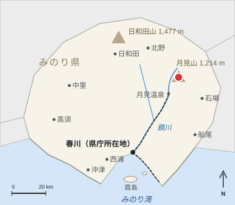

月見トンネル
出典: フリー百科事典『オープンペディア（Openpedia）』
| 月見トンネル Tsukimi Tunnel | |
|---|---|
 みのり県内の月見山の位置 | |
| 路線 | 鏡線 |
| 位置 | 月見町、蛍谷駅 - 月見口駅間 |
| 全長 | 2,184 m |
| 線路数 | 単線 |
| 工事期間 | 1927年 - 1931年 |
| 貫通 | 1930年12月12日 |
| 開業 | 1931年10月4日 |
| 設計 | 服部健三 |

月見トンネル（つきみトンネル）は、みのり県月見町にある春川鉄道鏡線の蛍谷駅 - 月見口駅間の単線鉄道トンネルである。全長は2,184 m。月見温泉へ上る区間で月見山の尾根の下を抜けており、この区間に鏡線の最急勾配25 ‰がある[1]。
鏡谷鉄道の技師長服部健三の指揮のもと、1927年から1931年にかけて建設された。服部は、勾配33 ‰で尾根を越える安価な案よりもこのトンネルを選んだ。両坑口から掘り進められ、1930年12月12日に貫通し、1931年10月4日に鏡線の最終区間とともに開業した。工事では14人の作業員が殉職し、1932年に月見口に服部の撰文による殉職碑が建てられた[2]。
1,067 mm軌間の路線として建設され、1952年に電化された。1979年に日和田道路トンネルが開通するまで、みのり県内で最長のトンネルであった。特急「月影」は約2分でこのトンネルを通過する。
脚注[編集]
この項目は、みのり県に関連した書きかけの項目です。この項目を加筆・訂正などしてくださる協力者を求めています。